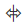

В графическом виде кампания представляет собой схему (Рис. 1), включающую:
-
Переходы между элементами.
Настройка схем кампаний осуществляется в дизайнере кампаний. Чтобы открыть дизайнер кампаний:
-
Откройте страницу нужной записи в разделе Кампании.
-
Перейдите на вкладку Схема кампании и нажмите кнопку Создать, если для кампании еще не была создана схема, или Изменить, если вы хотите внести изменения в существующую схему кампании.
Возможности дизайнера кампаний
В дизайнере кампаний доступны следующие возможности:
- Сохранение и отмена примененных изменений на панели инструментов (1).
Вы также можете при помощи соответствующих кнопок на панели инструментов открыть область настройки элементов, перейти к справочным материалам Академии или воспользоваться поиском элементов на схеме по их названию.
- Настройка схемы кампании с использованием элементов и потоков в рабочей области дизайнера кампаний (2). Чтобы добавить элемент на схему, выберите его в области Элементы дизайнера и, удерживая левую кнопку мыши, перетяните в область моделирования кампании (Рис. 2).
Чтобы удалить элемент, выделите его мышью и нажмите на клавишу “Delete”.Рис. 2 — Добавление элементов и потоков в рабочую область -
Выбор элементов и инструментов в области элементов (3). Область содержит элементы кампаний и следующие инструменты:
- “Выделение“ позволяет выбрать и переместить элемент в рабочей области дизайнера.
 “Лассо“ позволяет выделить сразу несколько элементов диаграммы.
“Лассо“ позволяет выделить сразу несколько элементов диаграммы.-  “Произвольное перемещение“ дает возможность передвигать элементы на диаграмме вправо/влево или вверх/вниз. Например, вы можете зажать правую клавишу мыши и протащить курсор вниз. В этом случае все элементы, которые находятся ниже курсора мыши, сдвинутся вниз.
Подробнее эти инструменты описаны в статье Дизайнер процессов.
- Настройка параметров кампании и ее элементов на панели настройки элементов (4).
- Управление масштабом и режимом просмотра схемы (5).
Настроить свойства кампании
Настройка общих свойств кампании осуществляется на панели настройки элементов (4). Чтобы перейти к настройке, кликните в рабочей области дизайнера кампаний или нажмите кнопку .
- В поле Период выполнения кампании по умолчанию укажите, с какой частотой будут выполняться шаги кампании, для которых не указано точное время выполнения.
С частотой, указанной в данном параметре, будут выполняться:
-
Шаги кампании, переход к которым настроен переход без указания точного времени перевода участников.
-
Элемент Добавление аудитории, который добавляет новых участников в кампанию.
-
Элемент Выход из кампании, который выводит участников из кампании.
-
- В поле Часовой пояс определите часовую зону, в которой выполняются все временные настройки кампании, например, время выполнения условных переходов. По умолчанию для кампании устанавливается:
-
Часовой пояс, указанный в профиле пользователя, который создал кампанию.
-
Часовой пояс, установленный в системной настройке “Часовой пояс по умолчанию”, если в профиле пользователя часовой пояс не указан.
Если часовой пояс не определяется описанными выше способами, то в поле Часовой пояс новой кампании будет установлено значение “(GMT) Время в формате UTC”. При необходимости часовой пояс может быть изменен.
-
-
Установите признак в поле Установить критичное время задержки выполнения кампании, если вы хотите определить для кампании критичное время задержки. Если в указанный период кампания не начнет выполняться, например, по причине обновления приложения, то она будет автоматически остановлена, а ответственный получит уведомление.
-
После установки признака выберите единицы времени задержки и их количество.
Использовать преднастроенные шаги кампании
В Creatio вы можете сохранить настройки элемента, чтобы в дальнейшем использовать их при настройке аналогичных шагов, в том числе, в других кампаниях. Это позволит сэкономить время и упростит настройку кампании.
Создать шаблон элемента
- Поместите на диаграмму кампании элемент Добавление аудитории и заполните его свойства:
- Из какого объекта добавлять аудиторию — “Контакт”.
- Из какого источника добавлять аудиторию — “Папка”.
- Из какой группы добавлять участников — “Готовы к продаже”. Подробнее: Элемент Добавление аудитории.
- Нажмите кнопку Сохранить (Рис. 3).
Рис. 3 — Сохранение настроек элемента
- В открывшемся окне введите название шаблона и подтвердите действие по кнопке OK (Рис. 4).
Рис. 4 — Сохранение шаблона элемента

В результате шаблон будет сохранен в справочнике Шаблоны элементов кампании. В дальнейшем его можно будет использовать при настройке кампаний.
Использовать преднастроенный элемент в кампании
- Добавьте элемент нужного типа на диаграмму и в его настройках нажмите кнопку Выбрать из справочника (Рис. 5).
Рис. 5 — Добавление шаблона из справочника
- Выберите нужный шаблон из списка доступных.
В результате к добавленному на схему элементу будут применены все настройки выбранного шаблона.
Функциональность позволяет копировать не сам элемент, а его настройки. Таким образом, каждый раз при использовании преднастроенного шага необходимо создавать новый элемент соответствующего типа и задавать ему указанные в шаблоне значения.